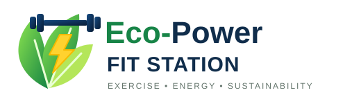
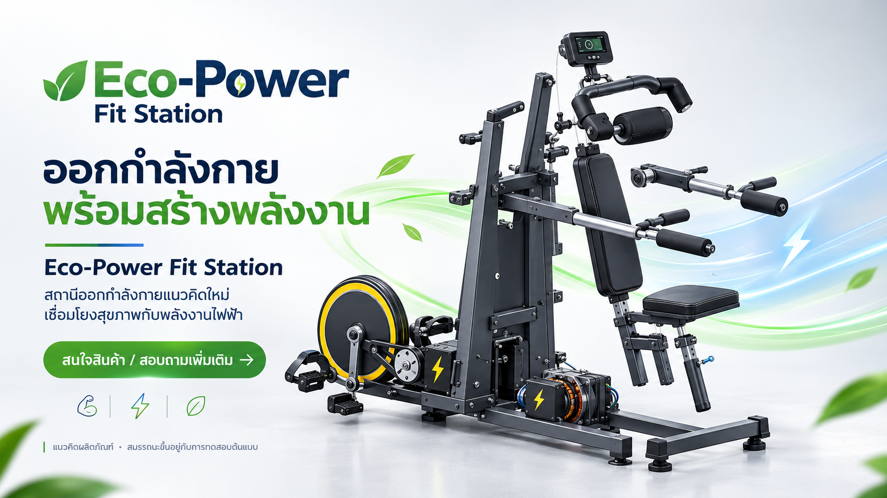
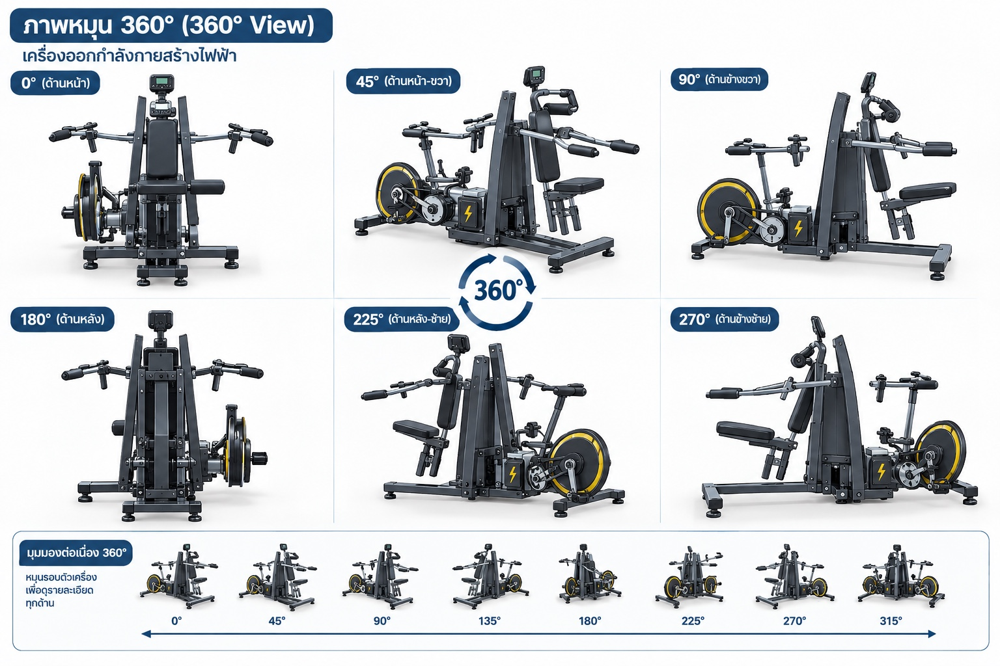
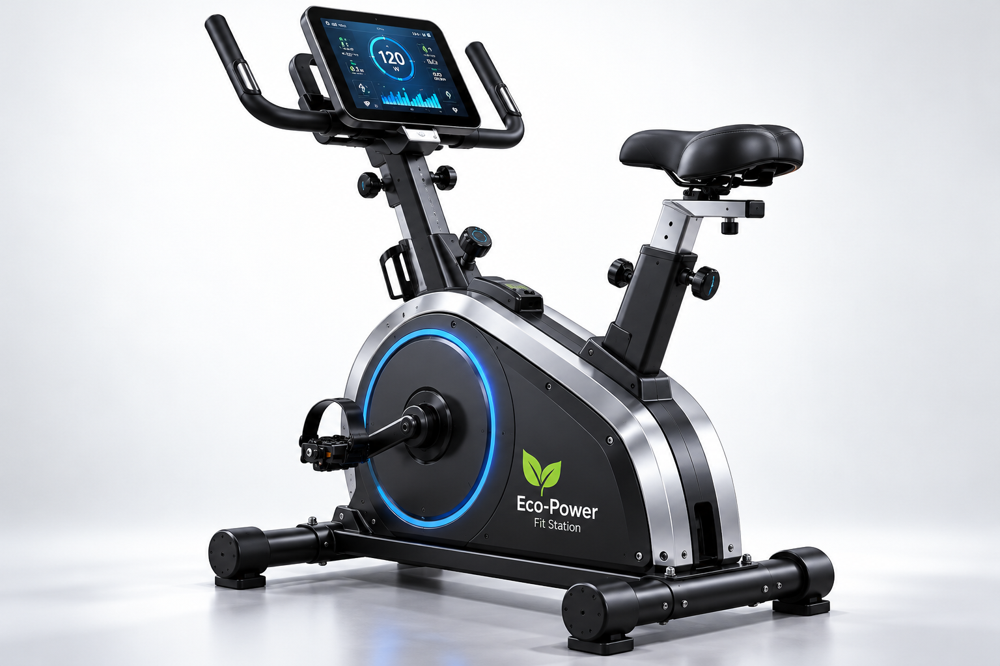
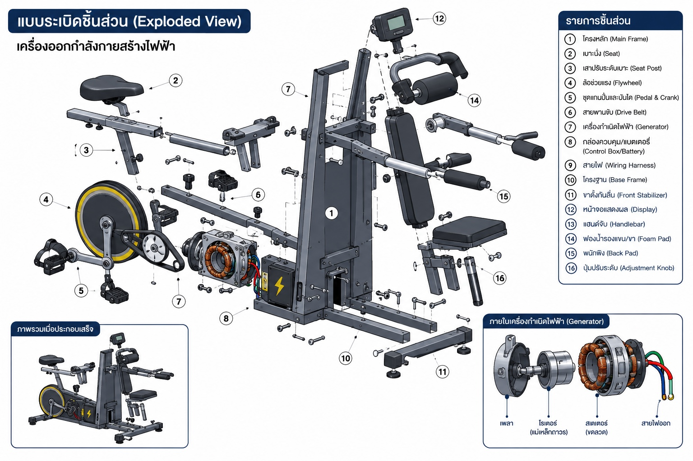

ออกกำลังกายหลายรูปแบบ
แนวคิดการออกแบบที่รวมส่วนประกอบการออกกำลังกายไว้ในเครื่องเดียว

นวัตกรรมเพื่อสุขภาพและพลังงาน
พบกับ Eco-Power Fit Station แนวคิดเครื่องออกกำลังกายที่ผสานการเคลื่อนไหวเข้ากับการผลิตพลังงานไฟฟ้า
ดูสินค้า ↓เรียนรู้เพิ่มเติม
แนวคิดการออกแบบที่รวมส่วนประกอบการออกกำลังกายไว้ในเครื่องเดียว
ออกแบบให้เปลี่ยนพลังงานกลเป็นไฟฟ้า โดยต้องทดสอบต้นแบบก่อนยืนยันสมรรถนะ
แนวคิดหน้าจอสำหรับแสดงข้อมูลการออกกำลังกายและสถานะระบบ
สินค้าแนะนำ

แนวคิดเครื่องออกกำลังกายผลิตไฟฟ้ารุ่นเดิม พร้อมชุดขับเคลื่อนและส่วนประกอบสำหรับแปลงพลังงานกลเป็นพลังงานไฟฟ้า
*ราคาเป็นตัวอย่างสำหรับงานนำเสนอ ยังไม่ใช่ราคาจำหน่ายที่ยืนยันแล้ว

อีกรุ่นหนึ่งของผลิตภัณฑ์ มาพร้อมหน้าจอดิจิทัลสำหรับแสดงข้อมูลการออกกำลังกายและดีไซน์ตัวเครื่องสีดำตัดขอบสีน้ำเงิน
*ราคาเป็นตัวอย่างสำหรับงานนำเสนอ ยังไม่ใช่ราคาจำหน่ายที่ยืนยันแล้ว
สำรวจผลิตภัณฑ์

แนวคิดผลิตภัณฑ์
แบบผลิตภัณฑ์แสดงโครงหลัก เบาะนั่ง ชุดปั่น ล้อช่วยแรง เครื่องกำเนิดไฟฟ้า กล่องควบคุม/แบตเตอรี่ และหน้าจอ ข้อมูลกำลังไฟฟ้า ความปลอดภัย และความทนทานต้องตรวจสอบจากต้นแบบจริง
FIT & GREEN ACADEMY
เริ่มจากสิ่งเล็ก ๆ ทำอย่างสม่ำเสมอ และเลือกกิจกรรมให้เหมาะกับวัยและสภาพร่างกายของตัวเอง
การเคลื่อนไหวสม่ำเสมอช่วยส่งเสริมสุขภาพหัวใจ กล้ามเนื้อ กระดูก การนอนหลับ และอารมณ์ เริ่มจากกิจกรรมที่ชอบ เช่น เดิน เต้น ปั่นจักรยาน หรือเล่นกีฬา
คาร์ดิโอ เช่น เดินเร็วหรือปั่นจักรยาน ช่วยฝึกความทนทาน; ฝึกแรงต้าน เช่น ยกน้ำหนักหรือใช้ยางยืด ช่วยเสริมความแข็งแรง; การยืดเหยียดช่วยคงช่วงการเคลื่อนไหว ทำอย่างนุ่มนวลไม่ฝืนเจ็บ
วอร์มอัพด้วยการเคลื่อนไหวเบา ๆ ก่อนเริ่ม ค่อย ๆ เพิ่มเวลาและความหนัก ดื่มน้ำ สวมรองเท้าเหมาะสม ตรวจอุปกรณ์ก่อนใช้ และผ่อนลงหลังจบ หากเวียนศีรษะ เจ็บหน้าอก หรือหายใจลำบากผิดปกติ ให้หยุดและขอความช่วยเหลือ
แนวคิดของเครื่องคือรับพลังงานกลจากการออกกำลังกาย ส่งผ่านระบบขับเคลื่อนไปยังเครื่องกำเนิดไฟฟ้า แล้วจัดการพลังงานผ่านวงจรควบคุมก่อนนำไปใช้หรือเก็บสะสม ประสิทธิภาพจริงต้องวัดจากต้นแบบ
ตั้งเป้าหมายเล็ก ๆ ที่ทำได้จริง เลือกกิจกรรมที่สนุก จดบันทึกความสม่ำเสมอ พักผ่อนให้พอ และปรับแผนตามความพร้อม ไม่จำเป็นต้องออกกำลังกายหนักทุกครั้งจึงจะมีคุณค่า
WHO แนะนำให้ผู้ใหญ่สะสมกิจกรรมแอโรบิกระดับปานกลาง 150–300 นาทีต่อสัปดาห์ หรือระดับหนัก 75–150 นาที และฝึกกล้ามเนื้ออย่างน้อย 2 วันต่อสัปดาห์ ทั้งนี้ควรปรับตามสุขภาพและความสามารถของแต่ละคน
ข้อมูลเพื่อการเรียนรู้ทั่วไป ไม่ใช่คำแนะนำทางการแพทย์เฉพาะบุคคลแหล่งอ้างอิง: WHO — Physical activity · กรมอนามัย
FIT & GREEN PLAYGROUND
ลองขยับร่างกายเบา ๆ เป็นเวลา 2 นาที
ก่อนออกกำลังกาย ควรทำอะไร?
เลือกทำกิจกรรมที่เหมาะกับตัวเอง แล้วติ๊กเมื่อทำสำเร็จ
ปรับค่ากำลังไฟฟ้าและเวลาเพื่อดูพลังงานเชิงทฤษฎี (ไม่ใช่ผลวัดจากเครื่องจริง)
สนใจผลิตภัณฑ์หรือไม่?
ฟอร์มนี้เป็นตัวอย่าง ยังไม่ได้ส่งข้อมูลไปยังเซิร์ฟเวอร์